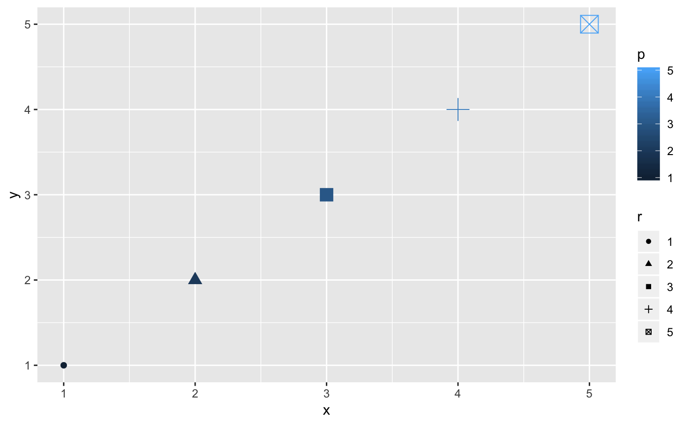
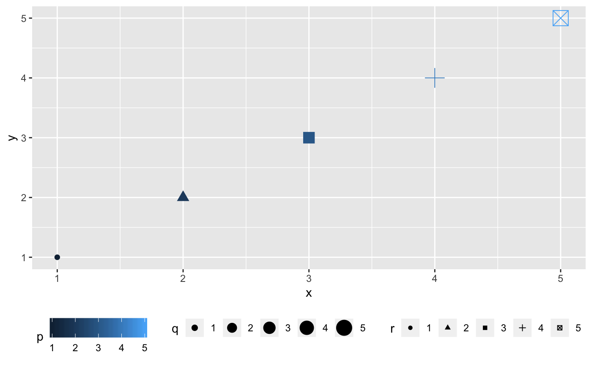
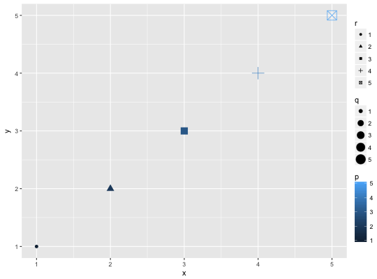
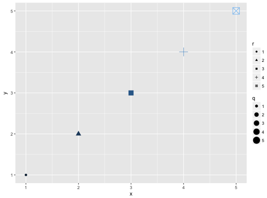
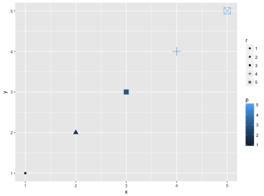
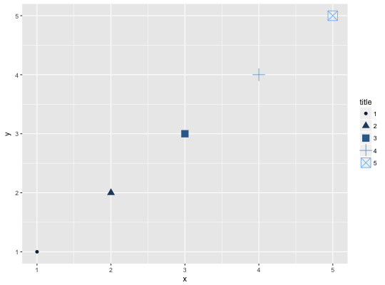
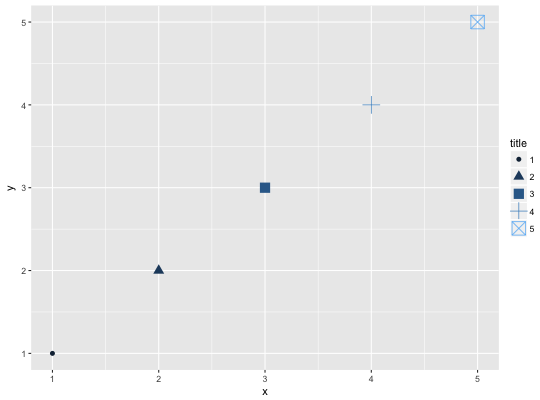
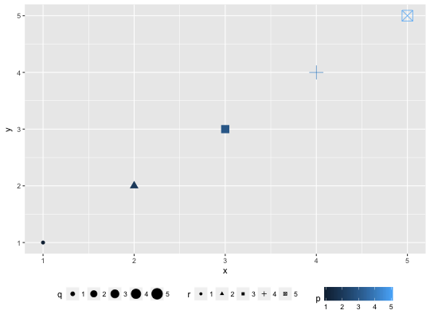
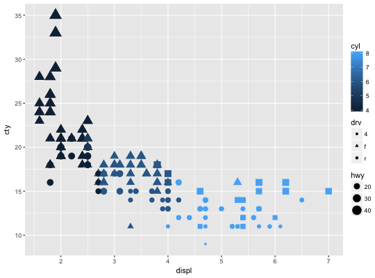

Set guides for each scale
Guides for each scale can be set scale-by-scale with the guide
argument, or en masse with guides().
guides(...)
Arguments
| ... | List of scale name-guide pairs. The guide can either
be a string (i.e. "colorbar" or "legend"), or a call to a guide function
(i.e. |
|---|
Value
A list containing the mapping between scale and guide.
See also
Other guides: guide_colourbar,
guide_legend
Examples
# ggplot object dat <- data.frame(x = 1:5, y = 1:5, p = 1:5, q = factor(1:5), r = factor(1:5)) p <- ggplot(dat, aes(x, y, colour = p, size = q, shape = r)) + geom_point() # without guide specification p#> Warning: Using size for a discrete variable is not advised.# Show colorbar guide for colour. # All these examples below have a same effect. p + guides(colour = "colorbar", size = "legend", shape = "legend")#> Warning: Using size for a discrete variable is not advised.#> Warning: Using size for a discrete variable is not advised.p + scale_colour_continuous(guide = "colorbar") + scale_size_discrete(guide = "legend") + scale_shape(guide = "legend")#> Warning: Using size for a discrete variable is not advised.# Remove some guides p + guides(colour = "none")#> Warning: Using size for a discrete variable is not advised.p + guides(colour = "colorbar",size = "none")#> Warning: Using size for a discrete variable is not advised.# Guides are integrated where possible p + guides(colour = guide_legend("title"), size = guide_legend("title"), shape = guide_legend("title"))#> Warning: Using size for a discrete variable is not advised.#> Warning: Using size for a discrete variable is not advised.#> Warning: Using size for a discrete variable is not advised.# position of guides # Set order for multiple guides ggplot(mpg, aes(displ, cty)) + geom_point(aes(size = hwy, colour = cyl, shape = drv)) + guides( colour = guide_colourbar(order = 1), shape = guide_legend(order = 2), size = guide_legend(order = 3) )